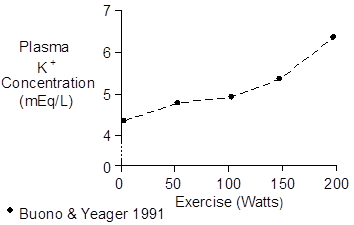
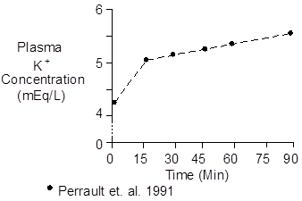

Exercise > Potassium
Plasma potassium concentration increases during exercise as potassium ions exit the working muscle. The increase in concentration is proportional to workload, as shown below.

Efflux appears to hit a maximum rate 2 minutes after the start of exercise (Juel et. al. 1990).

After an initial increase, plasma K+ continues to drift upward in long-term exercise, as shown above.
The data shown above were collected during upright cycling at 67% of maximum O2 uptake.
Increased plasma K+ will stimulate aldosterone secretion (see Aldosterone).
 Chemistry
Chemistry
The potassium ion has a molecular weight of 39.
Potassium concentration in plasma is typically 4.4 mEq/L.
References
Buono, M.J. and J.E. Yeager. Increases in aldosterone precede those of cortisol during graded exercise. J. Sports Med. Phys. Fitness 31:48-51, 1991.
Juel, C., J. Bangsbo, T. Graham and B. Saltin. Lactate and potassium fluxes from human skeletal muscle during and after intense, dynamic, knee extensor exercise. Acta Physiol. Scand. 140:147-159, 1990.
Perrault, H., M. Cantin, G. Thibault, G.R. Brisson, G. Brisson and M. Beland. Plasma atriopeptin response to prolonged cycling in humans. J. Appl. Physiol. 70:979-987, 1991.